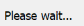
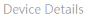
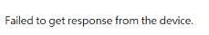
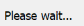
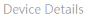
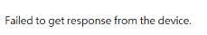

from nas_info import *
from library import *
Settings.OcrTextSearch = True
Settings.OcrTextRead = True
import sys
nas_name = sys.argv[1]
nas_lanip1 = sys.argv[2]
nas_ac = sys.argv[3]
nas_pwd = sys.argv[4]
"""
nas_name = "Jack-TS932X"
nas_lanip1 = "10.20.240.109"
nas_ac = "admin"
nas_pwd = "jack2030"
"""
target = nas_detail(name = nas_name, lanip1 = nas_lanip1, ac = nas_ac, pwd = nas_pwd)
print("Target is: " + target["name"])
def qfinder_detail_check():
fun_name = sys._getframe().f_code.co_name
print("*** Start to " + fun_name + " ***")
# open qfinder
open_qfinder()
# find target NAS
find_target_nas(name = target["name"], lanip1 = target["lanip1"])
wait(1)
if exists(Pattern().similar(0.80)):
click(Pattern().similar(0.80))
print("click bookmark button in main")
elif exists(Pattern().similar(0.80)):
print("Already bookmark")
else:
pass
wait(2)
click(Pattern( ).similar(0.90))
print("click detail button in main")
hover()
for i in range(10):
try:
waitVanish(,10)
if find():
flag = 1
break
elif find():
flag = 0
break
else:
pass
except:
flag = 0
assert flag == 1, "Open detail FAIL"
detail_window = Region(Region(403,163,471,347))
for i in range(3):
detail_window.click()
check_result = []
for i in target["detail_check"]:
if detail_window.exists(Pattern(i).similar(0.90)):
print("detail check PASS")
check_result.append("P")
else:
print("detail check FAIL")
check_result.append("F")
if detail_window.exists(Pattern().similar(0.90)):
print("Find end")
break
else:
for j in range(11):
detail_window.click()
wait(1)
print(check_result)
if "F" in check_result:
print("detail FAIL")
flag = "False"
else:
flag = "True"
print("detail PASS")
with open("result.txt", "w") as fp:
fp.write(flag)
print("--- End " + fun_name + " ---")
if __name__ == "__main__":
qfinder_detail_check()
).similar(0.90))
print("click detail button in main")
hover()
for i in range(10):
try:
waitVanish(,10)
if find():
flag = 1
break
elif find():
flag = 0
break
else:
pass
except:
flag = 0
assert flag == 1, "Open detail FAIL"
detail_window = Region(Region(403,163,471,347))
for i in range(3):
detail_window.click()
check_result = []
for i in target["detail_check"]:
if detail_window.exists(Pattern(i).similar(0.90)):
print("detail check PASS")
check_result.append("P")
else:
print("detail check FAIL")
check_result.append("F")
if detail_window.exists(Pattern().similar(0.90)):
print("Find end")
break
else:
for j in range(11):
detail_window.click()
wait(1)
print(check_result)
if "F" in check_result:
print("detail FAIL")
flag = "False"
else:
flag = "True"
print("detail PASS")
with open("result.txt", "w") as fp:
fp.write(flag)
print("--- End " + fun_name + " ---")
if __name__ == "__main__":
qfinder_detail_check()